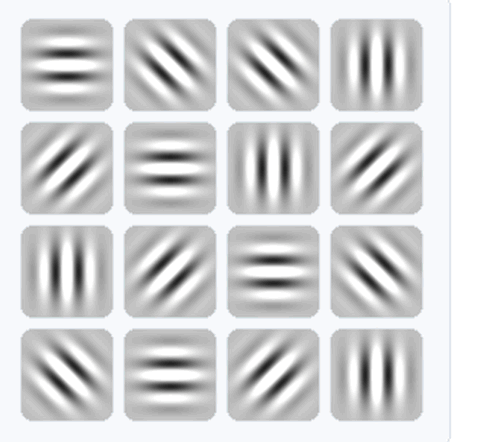
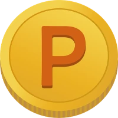

ミエるトレーニング、略して ミエトレ
1万人が使うアプリで、毎日やっている目のトレーニングですノーベル物理学賞の学者の名前がついた「ガボール模様」を使っていますルールに沿いながら、じっくり見てペアを消す1年以上、毎日つづけている人も大勢いますしばらく ながめて、目が慣れたら判定へ
毎日ちょっとずつが最強
アプリでは、これを1日3分

通常価格 5,280円（税込）
アプリのストアへ進みます

今の見え方を、3問でチェック数字としま模様を見て、答えるだけ。とばしても、アプリは はじめられます
目のチェックは、とばしました
ミエるトレーニング、略して ミエトレ

アプリでは、これを1日3分
ふくふく本舗で一度もお買い物をしたことがない方だけが対象です
交換のときに、ふくふく本舗の会員登録が必要です
1日でも休むと、1日目から数え直し
ゲームの時間は何分でもかまいません
ポイントがもらえるのは1回だけ
このキャンペーンでもらえる1000ポイントは、もらってから7日間だけ使えます
すでにお買い物をしたことがある方は、ポイントはもらえますが、交換はできません
本キャンペーンは、予告なく内容を変更、または終了することがあります。終了するときは、終了日をミエトレのサイトでお知らせします。終了日までに1日目のゲームをクリアした方は、7日目まで対象です
1日目は、これだけ！
あなたの年代は？
えらぶと、アプリのストアへ進みます
アプリのストアへ進みます
2日目からゲームだけ
7日目

1000ポイント GETそのあとふくふく本舗と連携（メールアドレスを登録）
後日事務局からメール（早ければ翌営業日）→ プラチナアイ 1つ無料